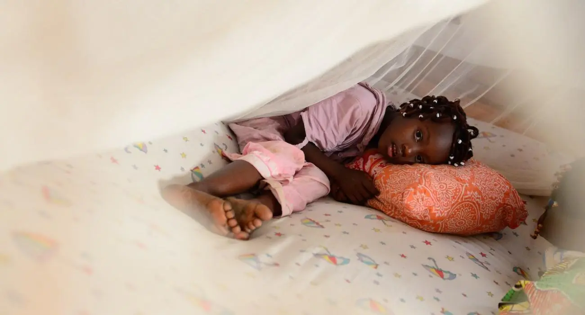
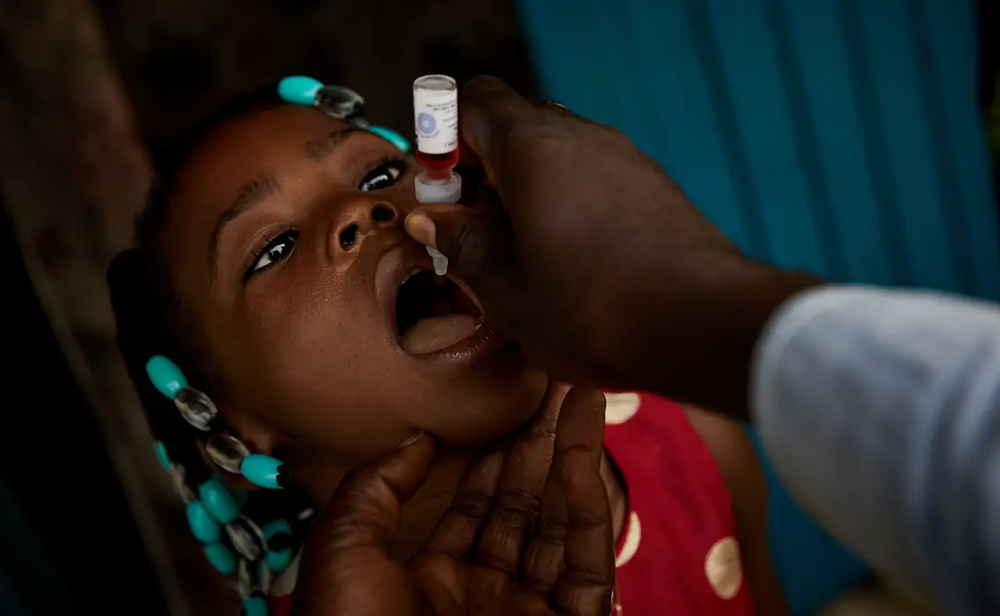
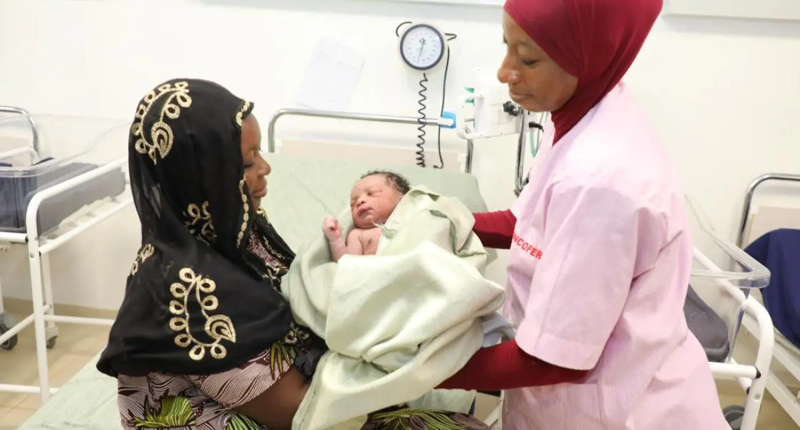

Health Tips & Statistics
Malaria, Polio & Vaccination
Malaria-related Indicators
Tips on Malaria
- Sleep under a mosquito net every night: Especially an insecticide-treated net (ITN). This is the most effective prevention, particularly for children under 5 and pregnant women.
- Get tested quickly if you have a fever: Malaria symptoms start with fever, chills, and headaches. Don’t wait — early diagnosis and treatment save lives
- Drain stagnant water around your house: Mosquitoes breed in still water — empty buckets, tires, flower pots, etc.
- Support vaccination programs: Côte d’Ivoire started using the RTS,S malaria vaccine for children in pilot programs. Encourage vaccination when available!
Polio-related Indicators
Tips on Polio
- Ensure children receive all polio vaccine doses: The oral polio vaccine (OPV) is free and safe in Côte d'Ivoire. Several campaigns are organized regularly — don't miss them!
- Check for vaccine cards: Make sure your child’s vaccine record is up-to-date. Full protection needs multiple doses.
- Spread the word, not the virus: Talk to your neighbors and relatives about the importance of polio vaccines, especially in rural areas.
- Keep hygiene high: Polio spreads through contaminated water or food — always wash hands with soap before meals and after the toilet.
Vaccination Indicators
General Vaccination Tips
- Complete the routine immunization schedule: Vaccines for measles, TB, hepatitis B, yellow fever, etc., are part of Côte d'Ivoire’s Expanded Program on Immunization (PEV).
- Vaccinate on time: Delays reduce effectiveness. Follow the schedule at local clinics or during vaccination days.
- Vaccines are free in public health centers: Many vaccines for children and mothers are offered free of charge in public facilities.
- Don’t rely on traditional medicine alone: Encourage families to combine traditional knowledge with modern preventive care like vaccines.